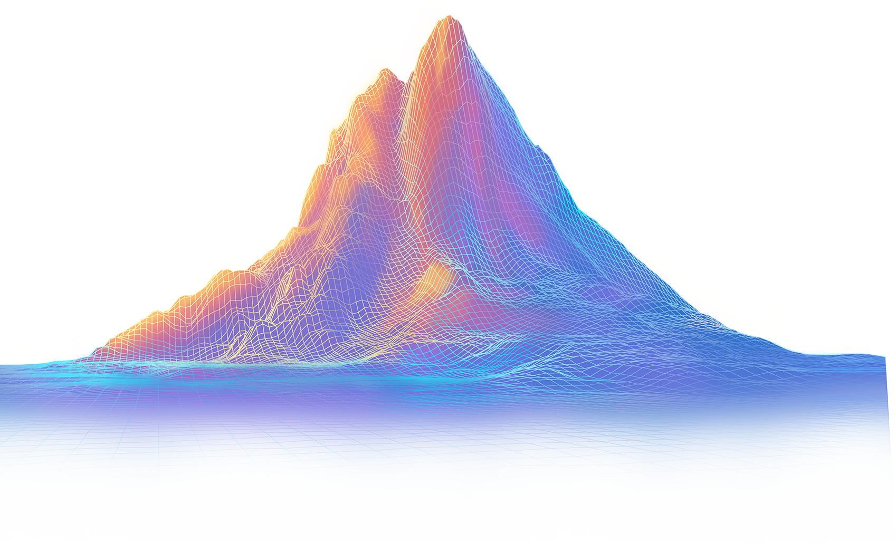
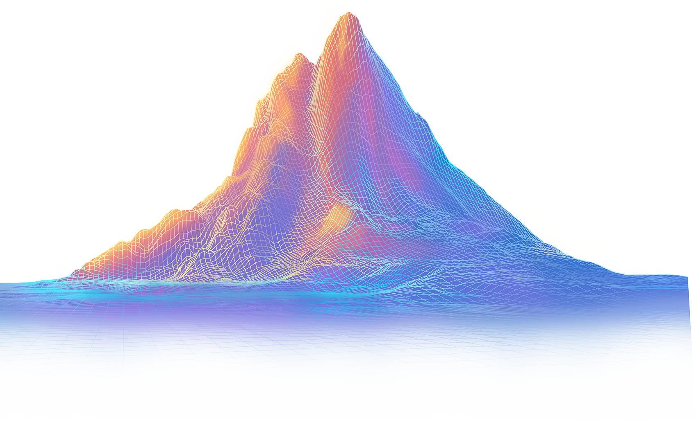
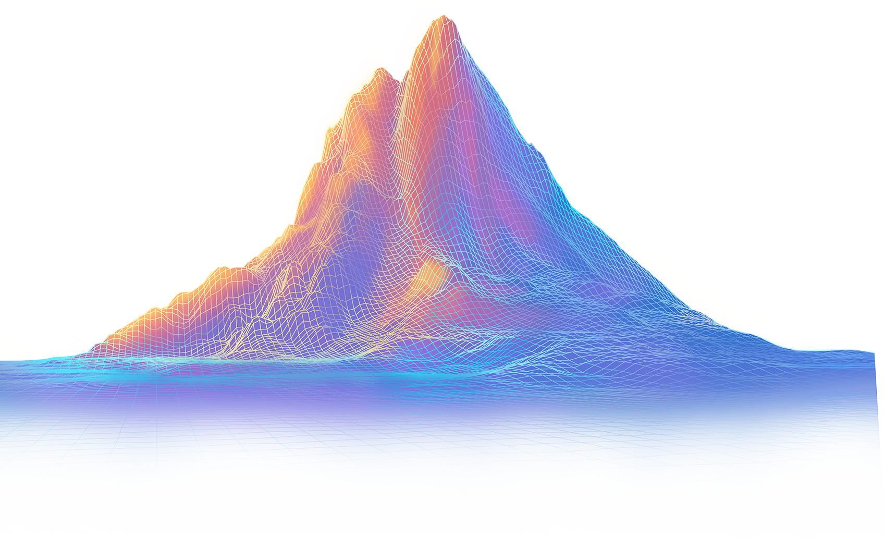
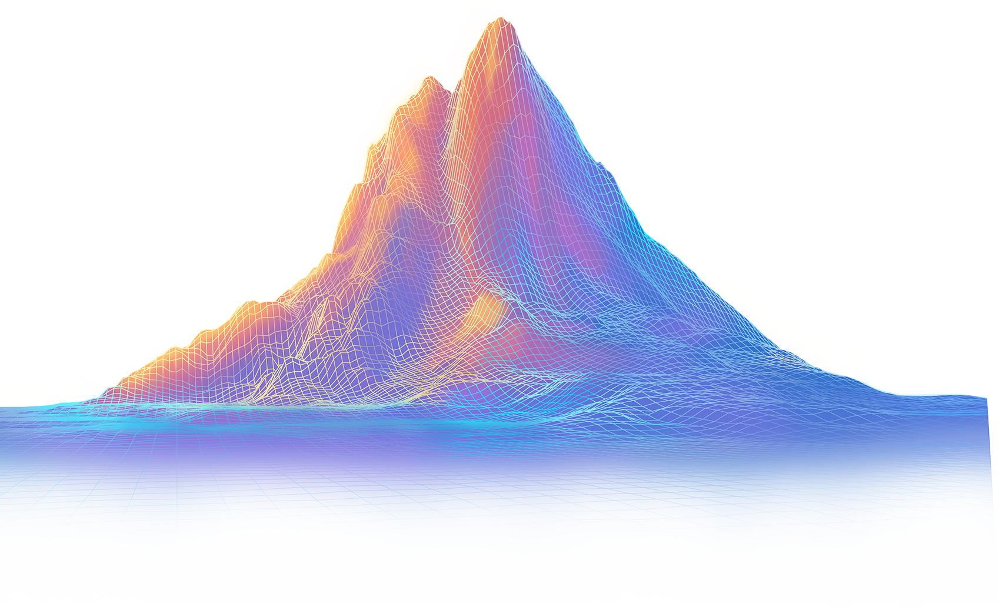

KARMA
TODAY
 



Karma 的概念源⾃因果法则，强调善⾏带来积极影响，恶⾏可能导致负⾯后果。这⼀思想最 早起源于印度哲学，认为⼈的⾏为不仅影响当下，还可能塑造未来
在现代社会，karma 这⼀词汇被⼴泛使⽤，不仅象征着⾏为带来的回馈，也常⽤于社交平 台，作为衡量⽤户贡献和互动的⼀种⽅式。⽆论是在哲学、道德，还是⽇常⽣活中，karma 都提醒⼈们：你的每⼀次善⾏，都可能影响世界，也可能影响你⾃⼰。
Karma 币——善⾏的象征Karma 币是⼀种⽤于记录和象征善⾏的⾮⾦融性数字资产，它承载着“善⾏值得被认可”的理 念。我们希望，每⼀份善意都能被看见，每⼀位⾏善者都能被激励，从⽽⿎励更多⼈投⾝公 益。
然⽽，全球每天都在发⽣⽆数善⾏，从帮助弱势群体到⽀持社区发展，这些⾏为往往难以量 化和记录。Karma 采⽤了创新的 Mint 机制和社区奖励体系，使其成为善⾏的象征，⽽⾮交 易⼯具，从⽽保持其纯粹的公益属性，与“karma”的原始意义保持⼀致。
Karma 币的Mint机制Karma 币是⼀种⽤于记录善⾏的⾮⾦融性数字资产，所有 Karma 币的铸造（Mint）都直接源 于公益⾏为，确保其与“善⾏”概念保持⼀致。Karma 没有预挖）Pre-mine ，也不⽀持任何 形式的付费铸造（Minting）。 唯⼀的⽅式是通过公益捐赠，从⽽形成⼀个去中⼼化的、透 明的善⾏记录系统。
为什么选择捐赠作为 Mint 机制？ 捐赠⾏为被选定为 Karma 的 Mint 触发条件，主要基于以下因素：
根据2022 年美国慈善捐赠统计，全年慈善捐赠总额达到4,993 亿美元，具体分布如下：
• 宗教：占⽐约28%
• 教育：占⽐约14%
• ⼈类服务：占⽐约13%
• 医疗保健：占⽐约9%
• 公共社会福利：占⽐约8%
• 国际事务：占⽐约6%
• 艺术、⽂化和⼈⽂：占⽐约 5%
• 环境和动物保护：占⽐约 3%
• 其他：占⽐约14%
根据历史数据，美国的慈善捐赠通常占全球捐赠总额的40%-45%，据此估算，2022年全球 慈善捐赠总额约为 1.2 万亿美元。如此庞⼤的公益⾏动，不应仅停留在传统记录⽅式，⽽应 被更好地在区块链上永久存证，让善⾏可见，让公益更透明。
Karma 的 Mint 过程为了确保 Karma 仅⽤于记录真实的公益捐赠⾏为，团队采取了透明、公正的捐赠验证流程：
1. 取得授权：Karma 团队与募捐主办⽅或个⼈取得联系。获得捐助者、受捐者及主办⽅的同意，授权 Karma 参与此次捐款记录。
2. 见证捐款事件：捐款⾏为发⽣时，Karma团队不介⼊原流程，仅作为见证者记录捐赠⾦额，以美元现价计算。
3. 铸造Karma：Karma 团队按照路线图 以及捐赠⾦额Mint 出相应数量的 Karma 币，分配给相关参与⽅（详见后⽂）。
4. 公益传播：在募捐主办⽅正式发布捐款新闻后，Karma 团队将在公开渠道同步相关信息，提升公益⾏动的社会关注度，增强其传播效应。
这⼀机制确保了 Karma 不是“购买”或“交易”的代币，⽽是⼀种⽤于记录和象征善⾏的数字标识，强化了其公益属性，并使其远离⾦融监管风险。
Karma的发⾏总量10亿
Karma Mint 计算⽅法Karma 的 mint 分为 11 个批次，总发⾏量为 10 亿。我们采⽤了一条温柔上扬的指数曲线，来描绘⼀个机构从萌芽到崛起的过程。
曲线的起点缓慢，仿佛⼀个新⽣组织在寂静中扎根，如同细胞悄然分裂、思想缓慢酝酿，外界⼏乎⽆感。但随着时间推移，每⼀步的努⼒开始累积影响，推动曲线缓缓提速。正如阳光照进森林，藤蔓开始攀爬、枝叶逐渐舒展，影响⼒也在悄然之间，从⼀点星⽕扩散为燎原之势。
在数学上，我们使⽤指数函数 y = e^x - 1 来刻画价值的⾃然增长，并通过⾮均匀划分的⽅式定义每个批次的横轴位置：
x_i = L * (i / n)^0.83
其中，L 是总长度，n 是批次数量，i 为当前批次编号，指数 0.83 控制了批次间距的分布节奏——通过“前宽后窄”的横轴划分，有效缓和了指数函数在后期的剧烈陡升，使整体⾯积增⻓更加平滑⽽有序。
这样的设计既保证了早期批次拥有充⾜的空间与意义，也让整个系统更贴近真实世界中“积累—放⼤—扩散”的⾃然成长节奏。
在每个批次中，每单位的捐赠⾦额对应的 Karma 产出量也随着递减（难度上升）。
| 批次 | Karma 对应捐赠额（USD） | mint 数⽬ | 批次总捐赠额（USD） | 合计总捐赠⾦额（USD） |
|---|---|---|---|---|
| 1 | 0.08 | 12,500,000 | 1,000,000 | 1,000,000 |
| 2 | 0.16 | 28,310,000 | 4,530,000 | 5,530,000 |
| 3 | 0.32 | 42,480,000 | 13,590,000 | 19,120,000 |
| 4 | 0.64 | 56,660,000 | 36,260,000 | 55,390,000 |
| 5 | 1.28 | 71,320,000 | 91,280,000 | 146,670,000 |
| 6 | 2.56 | 86,710,000 | 221,980,000 | 368,650,000 |
| 7 | 5.12 | 103,030,000 | 527,530,000 | 896,180,000 |
| 8 | 10.24 | 120,430,000 | 1,233,220,000 | 2,129,400,000 |
| 9 | 20.48 | 139,050,000 | 2,847,740,000 | 4,977,140,000 |
| 10 | 40.96 | 159,020,000 | 6,513,560,000 | 11,490,690,000 |
| 11 | 81.92 | 180,490,000 | 14,785,380,000 | 26,276,070,000 |
跨批次计算：在某些情况下，单笔⼤额捐赠可能会跨越多个 Mint 批次，这种情况下，按照 每个批次的标准分别计算 Karma 分配，确保公平性。
⽰例：
假设当前在 第 5 批次（1 Karma = $1.28） 进⾏ Mint，⽽某笔捐款⾦额较⼤，导致部分 Mint 额度进⼊ 第 6 批次（1 Karma = $2.56），那么：
• 该笔捐款会按照第 5 批次规则计算对应部分的 Karma
• 超出的部分则按照第 6 批次规则计算 Mint 量
Mint 难度递增的⽬的
• 确保早期参与者的激励，同时⿎励长期捐赠
• 控制供应量，避免通胀影响 Karma 的公益价值
• 通过计算透明化，避免⼈为操控 Mint 规则
这⼀模式进⼀步强化了 Karma 作为公益记录⼯具的属性，⽽⾮投机资产，从⽽降低⾦融监 管风险。
Karma的分配Karma 仅通过Mint（铸造）这⼀单⼀机制产⽣，每次 Mint ⽣成的 Karma 都按照固定⽐例进 ⾏分配。这⼀规则确保Karma 只与公益⾏为挂钩，避免因⼆级市场操作或预挖机制导致不 公平分配。
Karma慈善基⾦的核⼼⽬标是通过Karma作为公益激励⼯具，在更⼴泛的范围内促进善⾏。 基⾦运作采⽤完全透明的⽅式，所有资⾦流动和⽀出均记录在区块链上，以确保100%的透 明度，提升公众信任。
公益守护NFT（Charity Guardian NFT） 是⽤于基⾦治理的关键⼯具，赋予持有者对基⾦ 公益资助提案的投票决策权。购买NFT赋予持有者参与治理的权益。
以上合并确保慈善基⾦和 NFT 治理机制紧密结合，并明确公益守护 NFT 的公益属性及治理功能，避免⾦融风险。
公益声誉系统为了进⼀步激励公益⾏为，Karma 计划推出 公益声誉系统，该系统将基于 Karma 代币的贡 献，构建⼀个透明、公正的声誉评分机制。
Karma钱包是⼀个专门为公益⽣态设计的多功能数字资产管理⼯具，旨在实现公益领域内的 资⾦安全管理、⾃由交流及消费便利。
功能特点
公益应⽤场景
通过Karma钱包，捐赠者不仅能追踪⾃⼰的捐赠去向，还可与公益项⽬直接沟通，确保善款 ⽤途透明明确。受捐者则能更快捷地获得援助资⾦，并及时反馈资⾦使⽤情况，形成公益⽣ 态内的良性互动。
Karma钱包不仅增强了公益资⾦的流动性，也提升了公益⾏为的效率与可信度，是Karma⽣ 态中实现"善⾏可见，回馈可证"的重要⽀撑⼯具。
总结Karma 构建了⼀套去中⼼化的公益激励⽣态，通过创新的 Mint 机制，确保所有 Karma 代币均来源于真实的公益捐赠⾏为，彰显公益透明、公正的理念。Karma 代币的设计有效避免了⾦融属性，专注于记录和激励善⾏。
慈善基⾦与公益守护 NFT（Charity Guardian NFT）的结合，使基⾦的治理更加透明和民主化。通过购买 NFT，社区成员获得对公益资助项⽬的投票决策权，实现社区⾃治与公益使命的紧密结合。
此外，Karma 钱包的推出进⼀步加强了⽣态系统的实⽤性。钱包提供了安全的数字资产管理、即时沟通、法币兑换和消费⽀付功能，显著提升了捐赠者和受捐者之间的互动与公益资⾦的实效。
展望未来，Karma 将持续完善和扩展公益⽣态的各项功能，致⼒于建⽴⼀个透明、可信赖且⾼效的全球公益⽹络，让每⼀次善⾏都能清晰可见、每⼀份回馈都真实可证。
The concept of Karma originates from the law of cause and effect, emphasizing that good deeds bring positive outcomes, while bad actions may lead to negative consequences. This idea first emerged in Indian philosophy, which holds that a person’s behavior not only impacts the present but may also shape the future.
In modern society, the term “karma” is widely used—not only as a symbol of the consequences of one’s actions, but also as a way to measure user contributions and interactions on social platforms. Whether in philosophy, ethics, or everyday life, karma serves as a reminder: every good deed you perform may influence the world—and may also impact you.
Karma Token — A Symbol of Good DeedsKarma Token is a non-financial digital asset designed to record and symbolize acts of kindness. It carries the belief that “good deeds deserve recognition.” We hope that every act of goodwill can be seen, and every kind-hearted individual can be encouraged—thus inspiring more people to engage in philanthropy.
Around the world, countless good deeds occur every day—from supporting vulnerable groups to promoting community development—yet these actions are often difficult to quantify and record. Karma introduces an innovative minting mechanism and a community reward system, making it a symbol of goodwill rather than a tradable instrument. This ensures that its philanthropic essence remains pure and aligned with the original meaning of “karma.”
The Minting Mechanism of Karma TokenKarma Token is a non-financial digital asset created to record acts of kindness. All Karma Tokens are minted directly from philanthropic actions, ensuring their alignment with the concept of “good deeds.” There is no pre-mining, nor does Karma support any form of paid minting. The only way to mint Karma is through charitable donations, establishing a decentralized and transparent system for recording acts of goodwill.
Why Is Donation Chosen as the Minting Mechanism?Donations have been selected as the trigger for Karma’s minting process based on the following reasons:
1. Clearly Defined: Donation activities are typically explicit and verifiable, making them easy to track and record.
2. Quantifiable: The donation amount serves as a measurable standard, ensuring a degree of fairness in the minting process.
3. Amplification Effect: Charitable giving often attracts attention from media, communities, and the, helping to expand the impact of philanthropy.
The Global Landscape of Charitable GivingAccording to statistics from U.S. charitable donations in 2022, the total amount donated reached $499.3 billion. The distribution was as follows:
• Religion: approximately 28%
• Education: approximately 14%
• Human Services: approximately 13%
• Healthcare: approximately 9%
• and Social Welfare: approximately 8%
• International Affairs: approximately 6%
• Arts, Culture, and Humanities: approximately 5%
• Environmental and Animal Protection: approximately 3%
• Others: approximately 14%
Historically, donations from the United States account for about 40% to 45% of global charitable contributions. Based on this, it is estimated that global charitable donations totaled around $1.2 trillion in 2022. Such a vast volume of philanthropic activity should not remain confined to traditional record-keeping methods. Instead, it should be permanently documented on the blockchain—making good deeds visible and philanthropy more transparent.
Karma Minting ProcessTo ensure that Karma is used solely to record genuine philanthropic donations, the team follows a transparent and impartial donation verification process:
1. Authorization: The Karma team contacts the fundraising organizer or individual to obtain consent from the donor, recipient, and organizer, authorizing Karma to participate in the donation record.
2. Donation Witnessing: When the donation occurs, the Karma team does not interfere with the original process. It simply acts as a witness, recording the donation amount based on the current strong value.
3. Karma Minting: According to the roadmap and the donation amount, the Karma team mints the corresponding number of Karma Tokens and distributes them to the relevant parties (details provided in later sections).
4. Philanthropy Promotion: After the fundraising organizer officially announces the donation, the Karma team shares the related information through channels to enhance awareness and amplify the impact of the charitable action.
This mechanism ensures that Karma is not a token to be “bought” or “traded,” but rather a digital symbol used to record and represent good deeds. It reinforces the philanthropic nature of Karma and helps it avoid financial regulatory risks.
Maximum Supply of Karma1,000,000,000 (One Billion)
Karma Minting Calculation MethodThe minting of Karma is divided into 11 phases, with a total supply of 1 billion tokens. We have adopted a gently ascending exponential curve to represent the growth of an organization from its early stages to maturity. The curve begins slowly, as if a newborn entity is quietly taking root—like cells dividing in silence, or ideas gradually taking form, barely noticeable to the outside world. But over time, each effort begins to accumulate impact, gently accelerating the curve. Just like sunlight piercing through a forest, vines begin to climb, leaves gradually spread, and influence silently expands—from a spark into a wildfire.
Mathematically, we use the exponential function y = e^x - 1 to model the natural growth of value, and define the horizontal position of each batch using a non-uniform segmentation method:
x_i = L * (i / n)^0.83
Here, L represents the total length, n is the number of batches, i is the index of the current batch, and the exponent 0.83 controls the pacing of the batch intervals. This “wide-at-the-front, narrow-at the-end” segmentation approach softens the steep ascent of the exponential function in its later stages, resulting in a smoother and more orderly overall growth of the minting area. This design not only ensures that early batches have sufficient room and significance, but also aligns the entire system with the natural rhythm of real-world growth—progressing from accumulation, to amplification, to wide-scale diffusion.
The deep red labels in the chart represent the number of Karma tokens minted in each batch, with the specific figures as follows:
In addition, the donation amount required to mint one unit of Karma increases with each batch, mimicking the logic behind Bitcoin’s increasing mining difficulty over time. As community consensus grows, the system rewards “early adopters” with greater returns, while setting higher entry thresholds for “later participants.” This pricing mechanism not only reinforces the value of time but also further enhances the sustainability and fairness of the ecosystem.
| Batch | Donation per 1 Karma (USD) | Mint Quantity | Batch Total Donation (USD) | Cumulative Donation (USD) |
|---|---|---|---|---|
| 1 | 0.08 | 12,500,000 | 1,000,000 | 1,000,000 |
| 2 | 0.16 | 28,310,000 | 4,530,000 | 5,530,000 |
| 3 | 0.32 | 42,480,000 | 13,590,000 | 19,120,000 |
| 4 | 0.64 | 56,660,000 | 36,260,000 | 55,390,000 |
| 5 | 1.28 | 71,320,000 | 91,280,000 | 146,670,000 |
| 6 | 2.56 | 86,710,000 | 221,980,000 | 368,650,000 |
| 7 | 5.12 | 103,030,000 | 527,530,000 | 896,180,000 |
| 8 | 10.24 | 120,430,000 | 1,233,220,000 | 2,129,400,000 |
| 9 | 20.48 | 139,050,000 | 2,847,740,000 | 4,977,140,000 |
| 10 | 40.96 | 159,020,000 | 6,513,560,000 | 11,490,690,000 |
| 11 | 81.92 | 180,490,000 | 14,785,380,000 | 26,276,070,000 |
Cross-Batch Calculation: In some cases, a single large donation may span multiple minting batches. When this happens, the Karma allocation is calculated based on the minting rules of each applicable batch to ensure fairness.
Example:
Suppose the current minting is happening in Batch 5, where 1 Karma = $1.28. If a donation is large enough to exceed the remaining minting capacity of Batch 5 and spills into Batch 6 (where 1 Karma = $2.56), then:
Purpose of Increasing Minting Difficulty
This model further reinforces Karma’s role as a tool for recording philanthropy rather than as a speculative asset, thereby reducing the risk of financial regulation.
Karma AllocationKarma is generated solely through the minting mechanism. Each minting event follows a fixed allocation ratio to ensure that Karma remains exclusively tied to philanthropic actions, avoiding unfair distribution due to secondary market operations or pre-mining strategies.
• 45% Donation-Related Parties:
◦ 30% Donors (Fundraisers): The primary initiators of philanthropic actions receive the largest share of Karma, in recognition of their contributions.
◦ 10% Beneficiaries (Charity Projects or Recipients): Recipients are granted transparent and fair records of the donations, enhancing the credibility of philanthropic efforts.
◦ 5% Organizers (Charity Foundations or Fundraising Platforms): These entities facilitate and manage the fundraising process. If no organizer is involved, this share is equally divided between the donor and the beneficiary.
• 45% Platform Support and Ecosystem Development:
◦ 25% Team: Allocated for operations, technical development, marketing, and other essential expenditures.
◦ 5% Ecosystem Development: Used to incentivize developers, technical contributors, and community members, fostering ongoing innovation within the Karma ecosystem.
◦ 15% Charity Fund: Dedicated to supporting philanthropic projects. The use of funds is fully transparent and governed by the community, with project approvals determined through voting by holders of Charity Guardian NFTs.
• 10% Liquidity Management:
◦ Allocated to support market circulation within the Karma ecosystem. Mechanisms such as Liquidity Bootstrapping Auctions (LBA) will be used to determine initial pricing and ensure fair market entry while maintaining healthy liquidity.
Charity FundThe core mission of the Karma Charity Fund is to promote acts of goodwill on a broader scale, using Karma as a philanthropic incentive tool. The fund operates with complete transparency— every movement and expenditure of funds is recorded on the blockchain, ensuring 100% traceability and enhancing trust.
Key Features of Fund Operations:
• Full Transparency: All fund transactions and flows are recorded on-chain and are ly accessible.
• Karma-Only Donations: The fund only accepts donations in Karma. If non-Karma assets are received, they will be automatically converted into Karma and deposited into the fund's account to maintain the asset's clear philanthropic positioning.
• Decentralized Governance Model: The fund is governed by aly elected committee. This committee submits charitable funding proposals weekly, with only one proposal allowed to be executed per round. Proposals that are not approved must be resubmitted.
The Charity Guardian NFT serves as the core governance tool for the fund. It grants holders the right to vote on charitable funding proposals. Purchasing the NFT provides the holder with governance participation rights.
Governance Rules for Charity Guardian NFTs:
• Weekly Voting on Proposals: Each week, the committee submits one or more charitable funding proposals, which are voted on by Charity Guardian NFT holders within a two-day window.
• One Vote Per NFT, Irrevocable: Each NFT can cast only one vote per proposal, and the vote cannot be changed once submitted.
• Validity Threshold: A proposal will only be executed if it receives the highest number of votes and the total votes in favor exceed one-third of the total number of NFT holders.
• Governance as a Good Deed: Actively participating in governance is regarded as an act of kindness. Participants may receive occasional Karma airdrops as a reward. However, there is no guaranteed frequency or amount, in order to prevent the NFTs from acquiring financial characteristics.
Together, these rules ensure that the Charity Fund and the NFT governance mechanism are tightly integrated, clearly defining the charitable nature and governance function of the Charity Guardian NFTs while mitigating financial risk.
Good Reputation SystemTo further incentivize philanthropic behavior, Karma plans to launch a Public Good Reputation System— a transparent and fair reputation scoring mechanism based on contributions made through Karma tokens.
• Core Objectives:
◦ Record long-term philanthropic contributions and provide non-financial incentives.
◦ Ensure that the value of Karma tokens extends beyond digital assets, serving as a symbol of one's charitable reputation.
◦ Provide trustworthy social credit references for both charitable organizations and individuals.
• Incentive Mechanisms:
◦ Points System: Reputation levels are assigned based on Karma holdings and contribution behaviors.
◦ Partnership Benefits: Collaborations with charitable organizations and social platforms (such as LinkedIn) will position Karma reputation as a standard for measuring social contribution.
◦ Exclusive Privileges: Individuals with high Karma reputation scores may receive priority access to participate in philanthropic events.
Karma WalletThe Karma Wallet is a multifunctional digital asset management tool specifically designed for the philanthropic ecosystem. It aims to provide secure fund management, seamless communication, and convenient spending within the realm of charitable activities.
Key Features:
• Digital Asset Management and Transfers: The Karma Wallet supports the secure storage and rapid transfer of mainstream cryptocurrencies, enabling donors to make donations more conveniently and allowing recipients to receive funds more quickly.
• Built-in Communication Tools: The wallet includes secure instant messaging capabilities, allowing donors and recipients to communicate in real time. This enhances the transparency and directness of charitable actions and fosters better mutual understanding and trust between parties.
• KYC and Fiat Conversion: After completing identity verification (KYC), users can easily convert their crypto holdings into fiat currencies (such as USD, EUR, etc.) directly within the wallet, further improving the practicality and flexibility of charitable funds.
• Debit Card for Spending: The wallet comes with both virtual and physical debit cards. Users can use the fiat balance obtained from crypto conversion for online and offline spending, expanding the real-world use cases of philanthropic funds.
Use Cases in Philanthropy
Through the Karma Wallet, donors can not only track where their donations go but also communicate directly with charitable projects to ensure that the use of funds is transparent and well-defined. Recipients can access support funds more quickly and provide timely feedback on how the funds are used—creating a virtuous cycle within the philanthropic ecosystem.
The Karma Wallet not only enhances the liquidity of charitable funds but also increases the efficiency and credibility of philanthropic actions. It serves as a vital tool within the Karma ecosystem for realizing the vision of “visible good deeds, verifiable rewards.”
ConclusionKarma has built a decentralized philanthropic incentive ecosystem, anchored by an innovative minting mechanism that ensures all Karma tokens originate from real charitable donations— upholding the principles of transparency and fairness in philanthropy. The token’s design deliberately avoids financial attributes, focusing instead on recording and encouraging acts of kindness.
The integration of the Charity Fund with Charity Guardian NFTs brings transparency and democratization to fund governance. By purchasing NFTs, community members gain the right to vote on funding proposals, achieving a close alignment between community self-governance and the philanthropic mission.
Furthermore, the launch of the Karma Wallet greatly enhances the ecosystem’s practicality. It offers secure digital asset management, real-time communication, fiat conversion, and payment capabilities—significantly improving the interaction between donors and recipients, as well as the effectiveness of philanthropic funding.
Looking ahead, Karma will continue to improve and expand the features of its philanthropic ecosystem, striving to build a global good network that is transparent, trustworthy, and efficient—where every good deed is clearly visible, and every reward is genuinely verifiable.